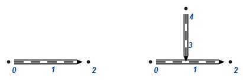

ScLink
Include file: #include <sc-memory/cpp/sc_link.hpp>
There is a special wrapped class ScLink that makes work with sc-links simple. It allows to set/get common types values.
Supported types: uint8_t, uint16_t, uint32_t, uint64_t, int8_t, int16_t, int32_t, int64_t, float, double, std::string.
Type1 value, but in memory stores Type2 value, then function Get<Type>() will throws an exception ExceptionInvalidParamsExample:
...
std::string const str = "any text value";
ScLink link(linkAddr);
link.Set(str);
link.IsType<std::string>(); // will return true
std::string const value = link.Get<std::string>(); // value == str
...
uint32_t const ivalue = 473;
link.Set(ivalue);
link.IsType<std::string>(); // returns false
link.IsType<uint32_t>(); // returns true
link.IsType<uint8_t>(); // returns false
...
link.Get<std::string>(); // throws ExceptionInvalidParams
link.Get<uint32_t>(); // returns stored value
link.IsType<uint8_t>(); // throws ExceptionInvalidParams
...
Also you can get type of specified ScLink:
ScLink link;
link.Set<uint32_t>(32);
link.DetermineType(); // will return ScLink::Type::UInt32
See ScLink::Types for full list of supported ones.
You can get value of any ScLink as std::string:
ScLink link;
link.Set<uint32_t>(32);
link.GetAsString(); // will return "32"
Common constructions
Include file: #include <sc-memory/cpp/sc_common_templ.hpp>
There are some function that allows to make a common routine work:
sc::ResolveRelationTuple- allow to ensure that specifiedquasy_binaryrelation between tuple and specified element exists. ReturnsScAddrof tuple. This function check if specified construction exists, and if it doesn't then generate it by template. Used template for check/generation:
Example:
ScAddr const tuple = sc::ResolveRelationTuple(ctx, el, relAddr);
// where:
// el - is a ScAddr of element to ensure tuple exist
// relAddr - is a ScAddr of quasy_binary relation
sc::SetRelationValue- create sc-link linked toelby relationrel. If it already exist, than changes it value to new one. ReturnsScAddrof sc-link. Used template for check/generation:
Example:
std::string const value1 = "test_value";
ScAddr const linkAddr1 = sc::SetRelationValue(ctx, el, relAddr1, value1);
uint32_t const value2 = 57;
ScAddr const linkAddr2 = sc::SetRelationValue(ctx, el, relAddr1, value2);
SC_ASSERT(linkAddr1 == linkAddr2, ()); // should be valid (ScAddr of link doesn't changed)
Iterators
You can use 3-element iterators and 5-element iterators from c++ code. Image below shows numeration of elements in 3-element (left) and 5-element (right) iterators. 
For both of them you have two approaches. First approach to use simple while loop. It suitable, when you need to break this loop depending on logic:
...
// example of f_a_a iterator
ScIterator3Ptr it3 = ctx.Iterator3(
set,
ScType::EdgeAccessConstPosPerm,
ScType::Unknown);
while (it3->Next())
{
// to get values use it3->Get(index), where index in range [0; 2]
... // there is you code
}
...
// example of f_a_a_a_f iterator
ScIterator5Ptr it5 = ctx.Iterator5(
objAddr,
ScType::EdgeDCommonConst,
ScType::NodeConstAbstract,
ScType::EdgeAccessConstPosPerm,
Keynodes::nrel_mass);
while (it5->Next())
{
// to get values use it5->Get(index), where index in range [0; 4]
... // there is you code
}
Second approach allows you iterate 3-element and 5-element constructions with less code, and suitable when you need to iterate all results. Use it if you need to iterate all results. Because it more clearly.
...
ctx.ForEachIter3(
set,
ScType::EdgeAccessConstPosPerm,
ScType::Unknown,
[] (ScAddr const & src, ScAddr const & edge, ScAddr const & trg)
{
// src equal to 0 value of iterator
// edge equal to 1 value of iterator
// trg equal to 2 value of iterator
... // there is you code
});
...
ctx.ForEachIter5(
objAddr,
ScType::EdgeDCommonConst,
ScType::NodeConstAbstract,
ScType::EdgeAccessConstPosPerm,
Keynodes::nrel_mass
[] (ScAddr const & src, ScAddr const & edge, ScAddr const & trg, ScAddr const & edgeAttr, ScAddr const & attr)
{
// src equal to 0 value of iterator
// edge equal to 1 value of iterator
// trg equal to 2 value of iterator
// edgeAttr equal to 3 value of iterator
// attr equal to 4 value of iterator
... // there is you code
});
HTTP
You can use ScHttpRequest class to make requests using HTTP protocol:
...
ScHttpRequest request("http://any.url");
request.SetType(ScHttpRequest::Type::POST);
request.SetData("any data");
request.AddHeader("Content-Type: application/json");
request.AddHeader(...);
request.Perform();
auto const response = request.GetResponse();
if (response.IsPtrValid() && response->IsSuccess())
{
auto const & responseStr = response->GetData();
// process responseStr
return true;
}
...